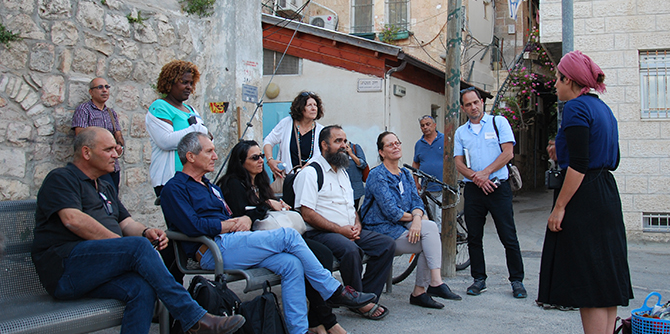

המפגש נפתח בכפר הנוער החקלאי "מקווה ישראל". התוודענו למודל הקליטה החינוכית המתקיים שם ואשר מותאם למגוון האוכלוסיות הלומדות במקום. ביקרנו בפנימייה של בית הספר הצרפתי ונחשפנו לדואליות בין התרבות הצרפתית לבין התרבות הישראלית ולפיתוח מודל חינוכי משולב השומר על יכולתו של הבוגר העולה מצרפת לנוע בין שתי התרבויות. התוודענו לשינויים ארגוניים שנערכו בבית הספר כדי לאפשר ללומדים מצוינות אקדמית. ביקרנו בפנימייה של בית הספר הדתי, פגשנו את מנכ"ל כפר הנוער ושמענו ממנו על החזון החינוכי של המקום. הביקור ב"מקווה ישראל" נערך בשיתוף פעולה עם יהודה מימרן, מנכ"ל כי"ח ובוגר מחזור ג' של בית ספר מנדל למנהיגות חינוכית. הבוגרים נפגשו גם עם מוטאסים עלי, מבקש המקלט היחיד מסודן שקיבל מעמד פליט בישראל וכיום סטודנט למשפטים במכללת רמת-גן, ושמעו ממנו מזווית אישית את סיפור ההגירה והפליטות.

ממקווה ישראל המשכנו ללוד, שם ביקרנו ב"טק-קריירה" והכרנו מודל לקליטת סטודנטים יוצאי אתיופיה בהיי-טק באמצעות מפגש עם סטודנטים הנמצאים בתהליך הכשרה.
בירושלים פגשנו את נתן שרנסקי, יו"ר הסוכנות היהודית, בעבר אסיר ציון ומסורב עלייה מברה"מ, פוליטיקאי ושר בממשלות ישראל. שמענו מפיו את סיפורו האישי ואת חזונו לארגון שהוא עומד בראשו. במפגש השתתפה אמירה אהרונוביץ', משנה למנכ"ל הסוכנות ובוגרת מחזור כ"ב בבית ספר מנדל למנהיגות חינוכית.
לסיום ערכנו סיור בשכונת נחלאות ובשוק מחנה יהודה בעקבות גלי העלייה. התוודענו ל"כור ההיתוך" שאפיין את מודל קליטת העלייה בתחילת שנות המדינה והכרנו באמצעות מדריכה/שחקנית את מגוון האוכלוסיות המרכיבות את פסיפס החברה הישראלית דרך מאכלים עדתיים ומפגשים עם דמויות טיפוסיות ופולקלור מקומי.
המפגש ננעל במינהל קהילתי לב העיר, שמנהלו הוא אייל שלי – בוגר מחזור א' של התכנית לפיתוח מנהיגות חינוכית צעירה בפריפריה. המשתתפים ערכו רפלקציה על הסיור שחוו, והבוגרים עודכנו על הנסיעה העתידית במסגרת הסמינר – סיור לימודי במקדוניה.
{kind=link}